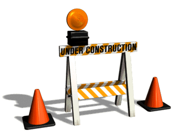

TUMBLR


TL;DR: I've been designing 'how messaging works' across many scales and contexts, from the one–to–one to the many–to–many — from system to user, and between users themselves. Related to this work, I've also been improving how we deal with self-moderation, user safety, and other security-related subjects.
At max, the size of our product design team has been four people, which is frankly absurd for a company of our size — this means co-operating across product boundaries and informing one anothers' work has been crucial to getting meaningful work done. While "Messaging" and "User Safety" have been my primary spheres of work, I've contributed a fair share to many other aspects of the product–system.
Lastly, I've been involved with Tumblr Labs as a council member/pseudo project manager, dreaming of a better and weirder blue hell site:

This is my tumblr: http://ed.tumblr.com/
—
Eventually, I need to get around to padding out some case studies and documentation for the following projects. If you're looking at this page to get an idea of what I'm doing at Tumblr, just email me and we can chat about whatever you'd like.
Product Designing:
Extracurricular Works:
—
Here's some imagery for you visual types.
Design and dev for unlaunched Tumblr Art Dept. residency program, You are Here
—
More Later  Be Patient.
{% include header.html %}